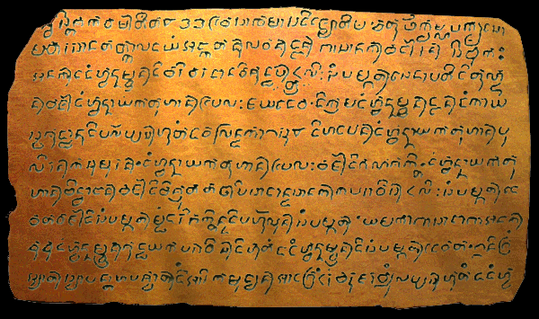
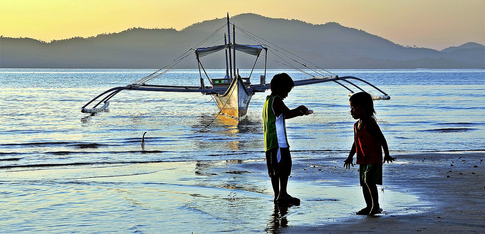

Ethnolinguistic Groups in the Philippines:
A Brief Look in the Pre-Hispanic Era of the Philippine Islands
By Angelo Otero
The Philippines is a country rich in history with a people plentiful in diversity of which there are currently 135 ethno-linguistic groups. Much of Filipino culture and language is heavily influenced by roughly 300 years of Spanish colonization. However, many people, including some Filipinos themselves, are unaware of the history of the Philippines before becoming a Spanish colony.
The identity of the earliest inhabitants of the Philippine Islands are still up to debate. An international team of archaeologists in Kalinga, Philippines found the fossilized remains of a rhinoceros in early 2018. The fossil showed cuts that indicated its meat being carved off along with stone tools nearby, presumably the same used by the hunters to butcher their prey.
Using processes called electron spin resonance and Uranium-series dating, the archaeologists were able to determine the age of the fossil as 709,000 years old. Though there were no human fossils found near the site yet, archaeologists assume that early humans made their way to the Philippines via land bridges during the Pleistocene Era (aka The Ice Age) which fits the general time of death of the rhinoceros.
Callao Man Bones
Courtesy of

The earliest human remains found in the Philippine Islands is currently the metatarsal foot bone belonging to the "Callao Man" dating back to 67,000 years old. It is currently being debated whether the Callao Man belonged to the homo sapiens or the extinct homo floresiensis species, but archaeologists believes the Callao Man's people were skilled hunters and arrived via seafaring.
Much of the Philippine Islands' pre-Hispanic history is gathered from the records of surrounding nations, as well as Spanish manuscripts. Unfortunately, most ancient native written records didn't survive as a result of either being inscribed on perishable materials such as bamboo or leaves, or Spanish colonists destroying them as they interpreted the local writing/literature as Anti-Christian or pagan in nature.
The earliest surviving written document found in the Philippines is the Laguna Copperplate Inscription (LCI). The inscription was written partly in Old Malay, Sanskrit, and Old Java/Tagalog languages using an ancient Indonesian script called Kawi. It records the king of Tondo absolving the debt of Namwaran and his family.
The LCI states the date of absolution to be Saka-year 822 in the Hindu calendar which is the year 900 A.D. in the Gregorian format. The LCI also documents other settlements near the Polity of Tondo, and shows heavy Indian influence such as the use of Indian honorifics like Raja, Datu and Maharlika. The discovery of the LCI in 1989, changed the understanding of Philippine history.
Callao Man Bones
Class

Like most of Asia, many Filipino cultures and languages were also influenced by the Chinese through trade and some immigration. Archaeological dig sites in ancient Filipino settlements found jade and porcelain artifacts matching ancient relics produced and traded by China.
In addition, most ancient states in the Philippine Islands, like the Polity of Tondo, showed ties to the largely "indianized" Hindu-Buddhist Srivijaya, and Majapahit Empires based in Sumatra, and Java respectively in modern day Indonesia. Islam would eventually find it's way to the Philippine Islands, though it wouldn't be as widespread in the Philippines as it was in the neighboring Indonesian islands and Malay peninsula.
The Spanish would colonize most of the islands, calling their new territory Las Islas Filipinas after King Philip II. They would remain in power for 333 years until the Spanish-American War, which ceded control of the Philippines to the United States for 20 million dollars. Parts of the Philippines would briefly fall under Japanese rule during World War II. The Philippines would eventually achieve autonomy in 1946 as the Philippine Republic. The result of so much trade, migrations, and shifts in power is a people steeped in hardship, but rich in spirit, abundant in diversity, and saturated in culture.
Callao Man Bones
Class

Pre-history - 900 A.D.
No written records exists for this period, but archaeological discoveries suggests the earliest humans arrived in the Philippine Islands as early as 700,000 years ago via land bridges. Not much is known about these early settlers. The most notable human remains found in the Philippines are the Callao Man, and the Tabon Man dated at 67,000 years old, and 16,500 years ago respectively. These more recent humans are believed to have arrived partially via land bridges and short distance seafaring. It's also widely believed that the ancestors of Filipino aboriginal groups such as the Aeta first arrived in the Philippines 30,000 years ago.
900 A.D. - 1,200 A.D.
Considered to be the start of the Philippines' written history. The oldest document found so far is the Laguna Copperplate Inscription dated at 900 A.D. Scholars believe that the majority of the Philippine Islands' inhabitants at this time were immigrants or descendants of immigrants from the Malay peninsula arriving via Indonesia. The Philippines at this time was part of Greater India, a series of Empires, thassalocracies, polities and independent states, all modeled after the Indian government and Hindu-Buddhist culture. Archaeological digs also suggest extensive trade with China.
1,565 A.D. - 1,898 A.D.
The Spanish colonial era began with the fifth expedition led by Miguel Lopez de Legazpi, who eventually became the Viceroy of the Spanish East Indies. Legazpi left Mexico with more weapons and men than previous expeditions, though his initial contact with the Philippine islanders were peaceful. In 1565 he made blood compacts with the Datus and Rajas of Bohol, Samar, Leyte and Limawasa, creating friendly relations and trade opportunities. Legazpi would eventually make his way to Cebu and defeat the hostile Cebuanos, establishing the first successful Spanish colony. Afterwards, the Kedatuan of Madja-as in the surrounding Visayan islands allied themselves with the Spanish in exchange for safety from the Muslim Moro raiders of Mindoro to the south.
With the help of Spanish reinforcements and Visayan allies, Legazpi ordered an attack on Manila in 1571 hoping to use Manila bay as a major harbor, and center of power. After roughly a month of fighting, Legazpi made peace with the local rulers of Manila and established the walled town of Intramuros, declaring it the islands' capital. Most of modern day Philippines fell under Spanish rule during this time alongside rapid conversion to Catholicism, making the Philippines the only predominantly Christian nation in Asia.
Lowland
People who settled the coasts and plains. They come from diverse backgrounds and were skilled seafarers. They were armed with iron weapons along with wooden side-arms such as throwing spears and shields, and preferred wearing light to no armor. They were also known to use swivel-mounted and hand-held versions of cannons called lantaka. They engaged in trade and waged war with each other and other surrounding thassalocracies. The majority of the lowland dwellers eventually either allied with the Spanish or were conquered. Descendants of lowland dwellers have for the most part adapted to the changes of time and, aside from the most destitute, are able to live relatively modern lives.
Nido Palawan
Courtesy of

Highland
People who settled the mountains and plateaus. Historically, some highland dwellers originally settled the lowland, but were driven to the mountains by immigrants who had superior numbers and weapons. Using simple tools, their livelihoods mainly depended on hunting and gathering, bolstered by agriculture. Some highland dwellers traded among themselves and lowland dwellers, while some preferred isolation. Despite that, highland dwellers, along with some of the Muslim sultanates were the only groups who were able to resist Spanish colonization. To this day, highland dwellers have retained their culture. However, most modern day highland communities are dying out along with their practices, or are intermingling into the larger Filipino population.